本章导读：时域分析看的是系统对"突然变化"（阶跃信号）的反应；频域分析看的是系统对"不同频率正弦波"的反应。两种视角互相补充，共同构成完整的控制系统分析体系。本章从频率特性的基本概念出发，逐步引入 Nyquist 图、Bode 图两大工具，建立频域稳定判据和稳定裕度的概念，最终落脚于频域法串联校正——这是控制工程师设计控制器的核心技能。
建议学习方法：每学完一种图形工具（Nyquist / Bode），立刻用 MATLAB 或 Python 手动绘制一遍，体会"数据→图形→判断"的完整流程。
5.1 频率特性的基本概念
5.1.1 频率响应——从正弦输入稳态输出讲起
人话版：你给一个系统输入不同频率的正弦波，看它的输出是什么样子的。系统对低频信号和高频信号的反应完全不同——这就像人的耳朵：能听到 20Hz~20kHz 的声音，超出这个范围就"听不见"了。
数学定义：对于一个稳定的线性定常系统，当输入为正弦信号 \(r(t) = A\sin(\omega t)\) 时，其稳态输出是同频率的正弦信号，但幅值和相位发生了变化：
其中：
- \(|G(j\omega)|\) 称为幅频特性——输出幅值与输入幅值之比
- \(\angle G(j\omega)\) 称为相频特性——输出与输入的相位差
通俗理解：系统就像一个"滤波器+延迟器"的组合。幅频特性告诉你系统对某个频率的信号放大了多少倍（或者衰减了多少），相频特性告诉你信号经过系统后"迟到"了多少。
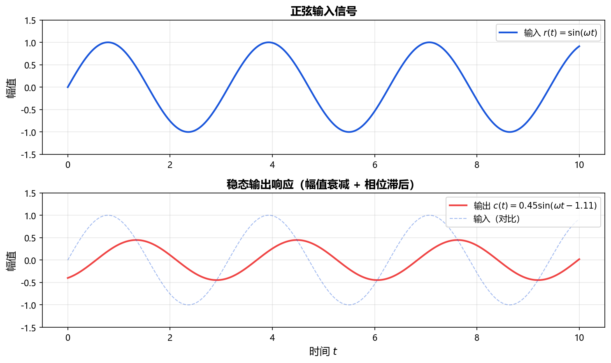
图 5-1：正弦输入经过一阶惯性环节 \(G(s)=1/(s+1)\) 后的稳态响应。注意输出信号的幅值变小了（衰减），相位也"迟到"了（滞后），但频率保持不变。
关键结论：频率响应是系统在稳态下的行为——暂态部分随时间衰减消失后，留下的就是频率响应。
5.1.2 频率特性——幅频特性 + 相频特性
用 \(s = j\omega\) 代入传递函数 \(G(s)\)，就得到了频率特性 \(G(j\omega)\)：
它是一个复数，可以写成三种等价形式：
| 形式 | 表达式 | 含义 |
|---|---|---|
| 直角坐标 | \(G(j\omega) = P(\omega) + jQ(\omega)\) | 实部 + 虚部 |
| 极坐标 | \(G(j\omega) = A(\omega) \angle \varphi(\omega)\) | 幅值 + 相位 |
| 指数形式 | \(G(j\omega) = A(\omega) e^{j\varphi(\omega)}\) | 幅值 × 相位因子 |
其中：
- \(A(\omega) = |G(j\omega)| = \sqrt{P^2 + Q^2}\) —— 幅频特性
- \(\varphi(\omega) = \angle G(j\omega) = \arctan(Q/P)\) —— 相频特性
为什么用 \(j\omega\) 代替 \(s\)？拉普拉斯变换中 \(s = \sigma + j\omega\)，当只关心稳态正弦响应时，\(\sigma = 0\)（不衰减），剩下 \(j\omega\)。物理上，\(j\omega\) 就是"纯正弦"的频率分量。
5.1.3 频率特性的图形表示——为什么需要图形化
频率特性是一组关于 \(\omega\) 的函数，直接看数学表达式很抽象。图形化的好处是：
- 一目了然：系统的"脾气"在一张图中展现
- 便于设计：校正器的设计往往在图形上完成
- 通用语言：工程师之间用图形交流
| 图形 | 坐标 | 特点 | 适用场景 |
|---|---|---|---|
| Nyquist 图 | \(G(j\omega)\) 在复平面上的轨迹 | 一条闭合曲线，直观展示稳定性 | 稳定判据、概念理解 |
| Bode 图 | 幅值(dB) vs \(\lg\omega\)，相位(°) vs \(\lg\omega\) | 渐近线法快速绘制，工程最常用 | 系统分析、校正设计 |
| Nichols 图 | 幅值(dB) vs 相位(°)，\(\omega\) 为参变量 | 一张图同时看幅值和相位 | 闭环分析、鲁棒设计 |
类比：Nyquist 图像"雷达扫描图"（极坐标轨迹），Bode 图像"听力图"（横轴是频率），Nichols 图像"心电图"（幅值-相位关系）。
5.2 幅相频率特性（Nyquist 图）
5.2.1 典型环节的幅相特性曲线
将 \(G(j\omega)\) 在复平面上以 \(\omega\) 为参变量（\(\omega: 0 \to +\infty\)）画出的轨迹，就是 Nyquist 图。
（1）比例环节 \(G(s) = K\)
就是一个点 \((K, 0)\)，不随频率变化。
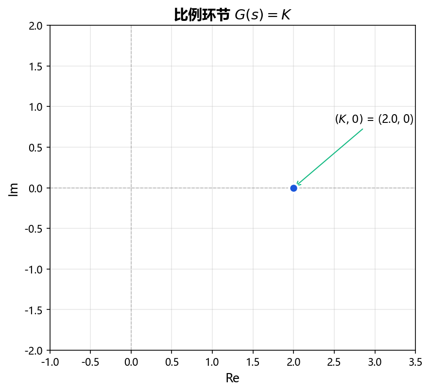
（2）积分环节 \(G(s) = \frac{1}{s}\)
- \(\omega \to 0^+\)：\(G(j\omega) \to -j\infty\)（沿负虚轴向下无穷远）
- \(\omega \to +\infty\)：\(G(j\omega) \to 0\)（趋向原点）
- 整条轨迹就是负虚轴
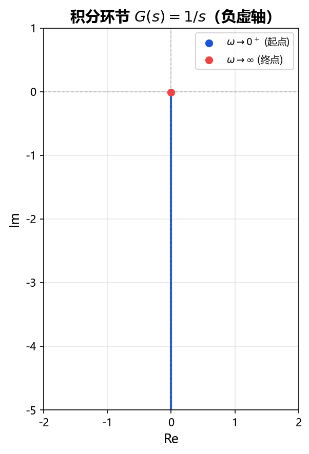
（3）惯性环节 \(G(s) = \frac{1}{Ts+1}\)
- \(\omega = 0\)：\(G = 1 + j0\)（起点在正实轴上）
- \(\omega = 1/T\)：\(G = 0.5 - j0.5\)（半圆最低点）
- \(\omega \to \infty\)：\(G \to 0\)（趋向原点）
关键结论：惯性环节的 Nyquist 图是一个第四象限的半圆。
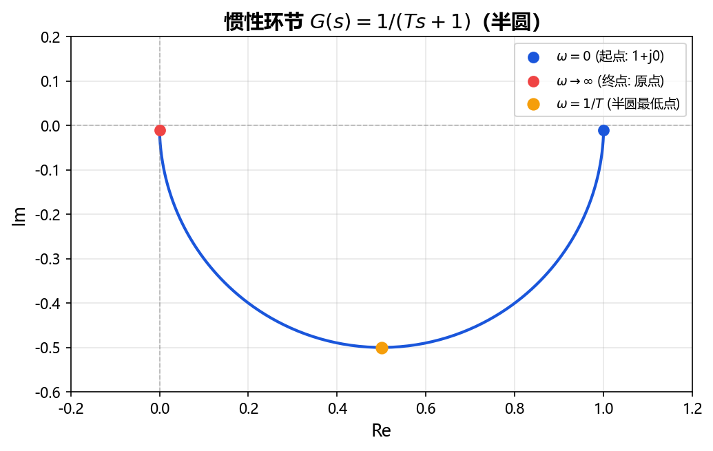
（4）振荡环节 \(G(s) = \frac{1}{s^2 + 2\zeta s + 1}\)
振荡环节的 Nyquist 图形状受阻尼比 \(\zeta\) 的显著影响：
- \(\zeta\) 小时，曲线"鼓"得厉害（谐振峰大）
- \(\zeta\) 大时，曲线接近惯性环节
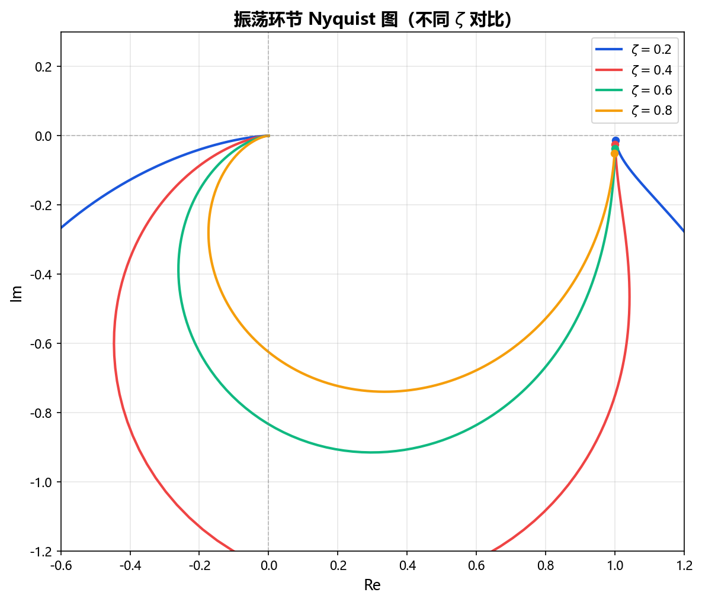
图 5-2d：不同 \(\zeta\) 下的振荡环节 Nyquist 图。注意 \(\zeta=0.2\) 时离原点最远，说明谐振现象明显。
（5）时滞环节 \(G(s) = e^{-\tau s}\)
- 幅值恒为 1（轨迹在单位圆上）
- 相位随频率线性滞后，无限旋转
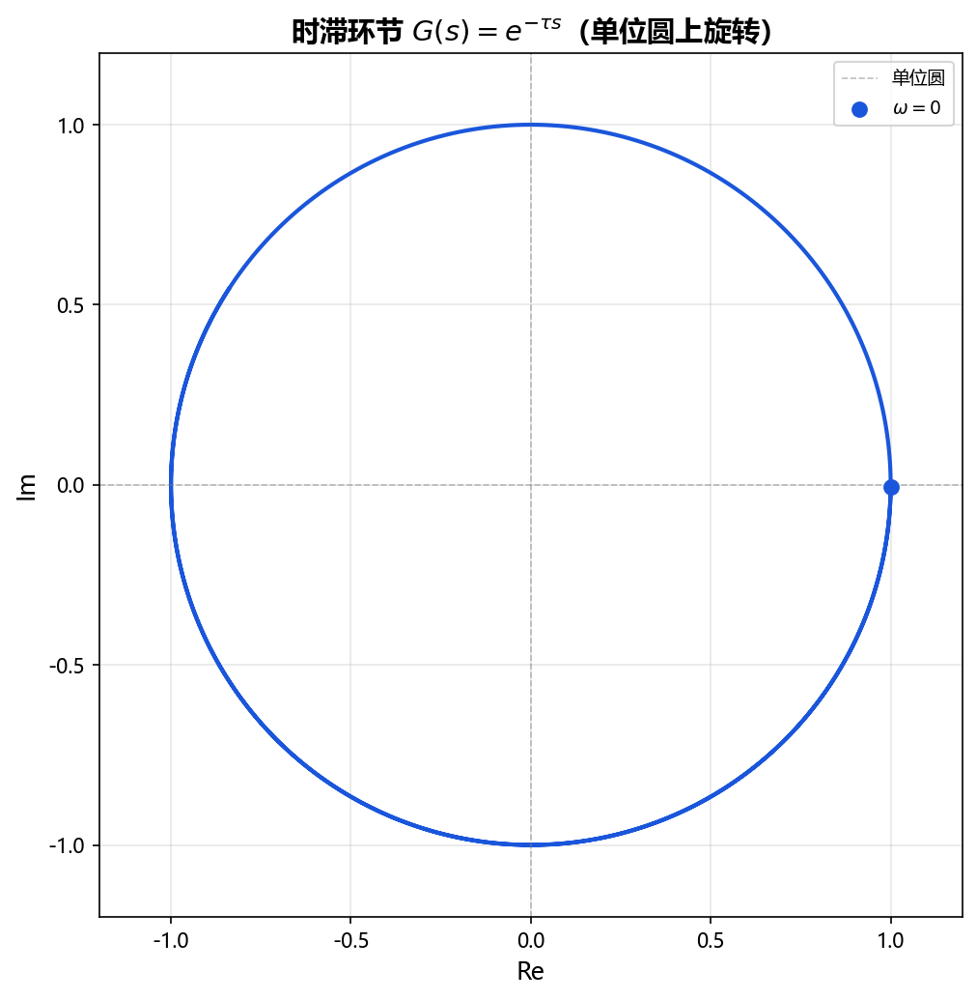
图 5-2e：时滞环节在单位圆上不断旋转，相位无界滞后。这是纯滞后系统的典型特征——高频段相位"烂得一塌糊涂"，给控制带来极大困难。
Nyquist 图汇总
| 环节 | 传递函数 | Nyquist 图形状 | 起点 (\(\omega\to0\)) | 终点 (\(\omega\to\infty\)) |
|---|---|---|---|---|
| 比例 | \(K\) | 一个点 | \((K,0)\) | \((K,0)\) |
| 积分 | \(1/s\) | 负虚轴 | \(-j\infty\) | 原点 |
| 微分 | \(s\) | 正虚轴 | 原点 | \(+j\infty\) |
| 惯性 | \(1/(Ts+1)\) | 第四象限半圆 | \((1,0)\) | 原点 |
| 振荡 | \(1/(s^2+2\zeta s+1)\) | 第三/四象限曲线 | \((1,0)\) | 原点 |
| 时滞 | \(e^{-\tau s}\) | 单位圆上旋转 | \((1,0)\) | 绕原点旋转 |
5.2.2 开环系统幅相特性曲线
开环传递函数 \(G(s)H(s)\) 是各个环节串联而成。
绘制步骤：
- 确定 \(\omega \to 0\) 的起点：由型别（积分环节个数）和增益决定
- 确定 \(\omega \to \infty\) 的终点：由分母阶次 - 分子阶次决定
- 连接并判断穿越实轴的位置
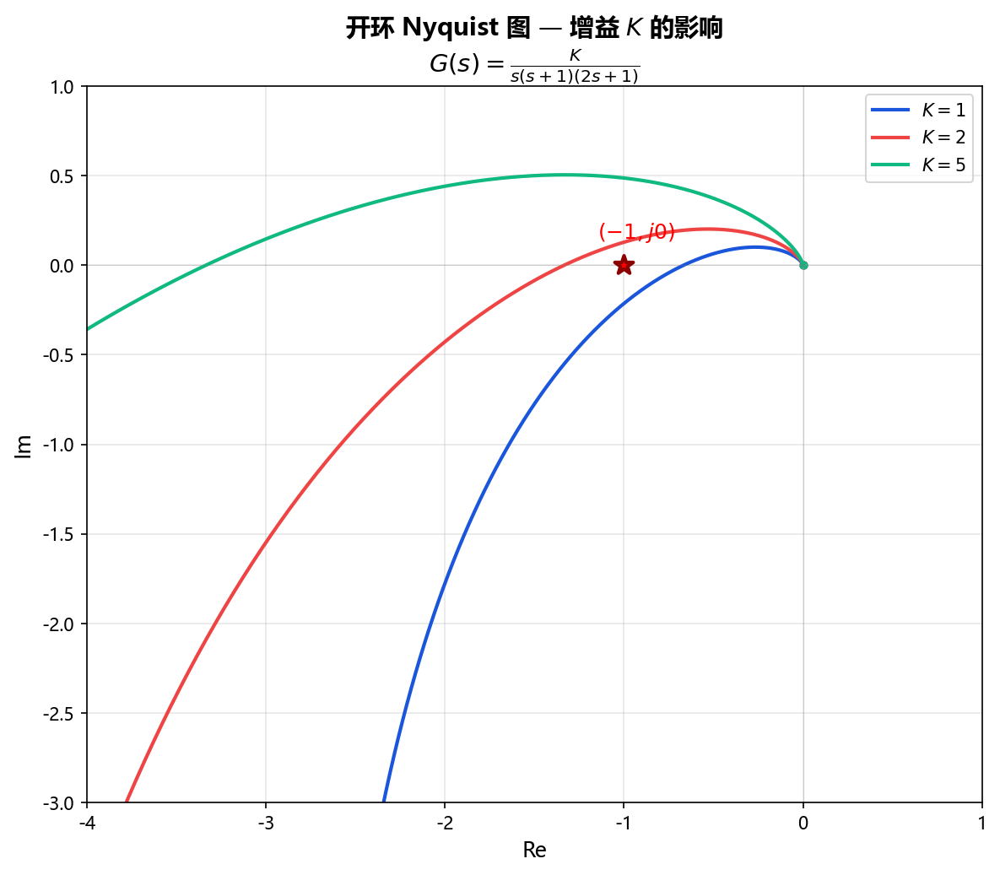
图 5-2f：开环 Nyquist 图随增益 \(K\) 的变化。\(K\) 增大时，曲线整体"膨胀"，可能包围 \((-1,j0)\) 点从而导致不稳定。
5.3 对数频率特性（Bode 图）⭐重点
为什么 Bode 图是工程界的"标准配置"？
1. 渐近线法——用直线段逼近曲线，手绘只需几分钟
2. 乘法变加法——串联环节的 Bode 图 = 各环节 Bode 图的纵向叠加
3. 频率轴对数化——横跨好几个数量级的频率范围都能清晰展示
5.3.1 典型环节的 Bode 图
Bode 图由上下两张图组成：
- 幅频图：纵轴 \(L(\omega) = 20\lg|G(j\omega)|\)（单位：分贝 dB），横轴 \(\lg\omega\)
- 相频图：纵轴 \(\varphi(\omega) = \angle G(j\omega)\)（单位：度 °），横轴 \(\lg\omega\)
（1）比例环节 \(G(s) = K\)
- 幅频：\(L(\omega) = 20\lg K\)，一条水平线
- 相频：\(\varphi(\omega) = 0°\)，恒为零
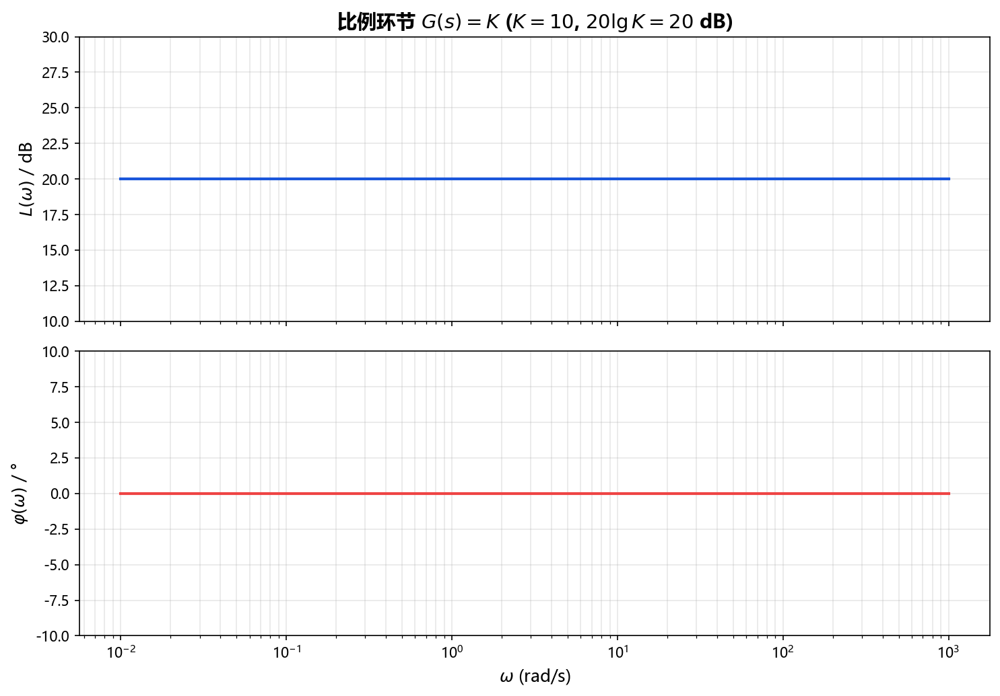
（2）积分环节 \(G(s) = \frac{1}{s}\)
- 幅频：\(L(\omega) = 20\lg\frac{1}{\omega} = -20\lg\omega\)，斜率为 \(-20\) dB/dec
- 相频：\(\varphi(\omega) = -90°\)，恒为 -90°
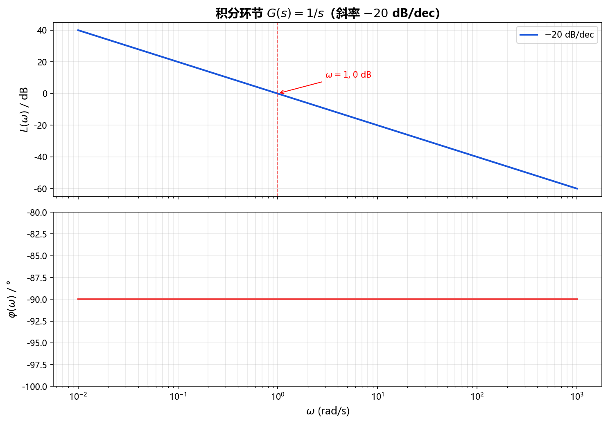
图 5-3b：积分环节的幅频特征是 −20 dB/dec 的直线，相位永远是 −90°。记住这个"基准斜率"，它是理解复杂 Bode 图的基础。
（3）惯性环节 \(G(s) = \frac{1}{Ts+1}\) ⭐
- 转折频率：\(\omega_T = 1/T\)
- 渐近线：
- \(\omega \ll 1/T\)（低频段）：\(L(\omega) \approx 0\) dB（水平线）
- \(\omega \gg 1/T\)（高频段）：\(L(\omega) \approx -20\lg(\omega T)\)（−20 dB/dec 斜线）
- 精确值在转折频率处：\(L(\omega_T) = -3\) dB，\(\varphi(\omega_T) = -45°\)
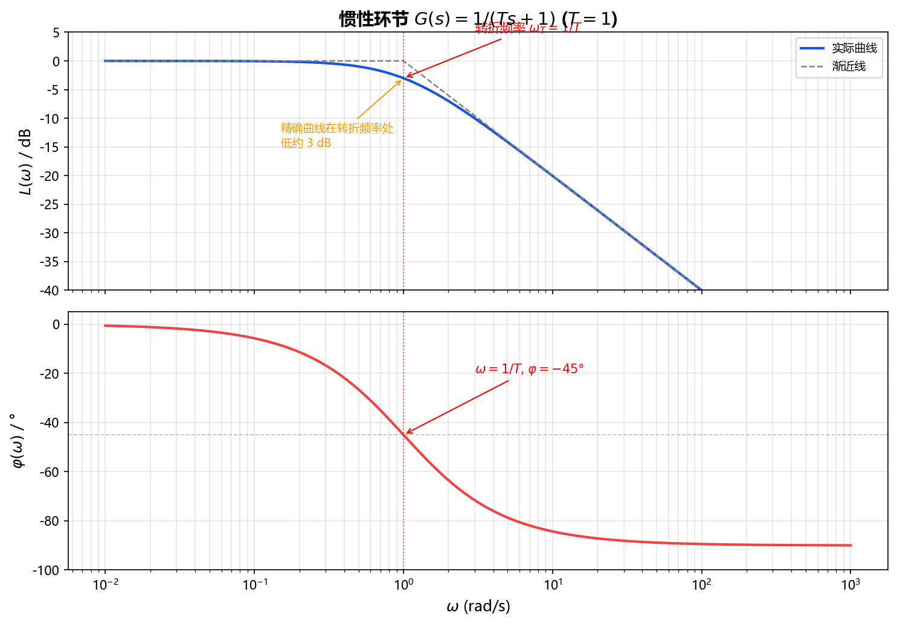
图 5-3c：渐近线（虚线）与精确曲线（实线）的对比。在转折频率 \(\omega_T = 1/T\) 处，精确值比渐近线低约 3 dB。这个"3 dB 误差"在工程上通常可以接受。
（4）振荡环节 \(G(s) = \frac{\omega_n^2}{s^2 + 2\zeta\omega_n s + \omega_n^2}\)
- 渐近线：
- \(\omega \ll \omega_n\)：\(L(\omega) \approx 0\) dB
- \(\omega \gg \omega_n\)：\(L(\omega) \approx -40\lg(\omega/\omega_n)\)（−40 dB/dec）
- 谐振峰：当 \(\zeta < 0.707\) 时，在 \(\omega_r = \omega_n\sqrt{1-2\zeta^2}\) 处出现峰值
- 谐振峰值 \(M_r = \frac{1}{2\zeta\sqrt{1-\zeta^2}}\)
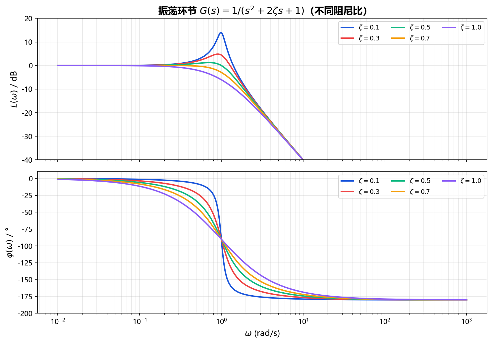
图 5-3d：阻尼比 \(\zeta\) 越小，谐振峰越尖锐。\(\zeta \geq 0.707\) 后无谐振峰，曲线光滑下降。工程经验：大多数系统希望 \(\zeta \approx 0.7\)，此时超调约 5%，谐振峰几乎不存在。
（5）时滞环节 \(G(s) = e^{-\tau s}\)
- 幅频：\(L(\omega) = 0\) dB（恒为 0，无衰减）
- 相频：\(\varphi(\omega) = -\tau\omega\)（随频率线性滞后，无界）
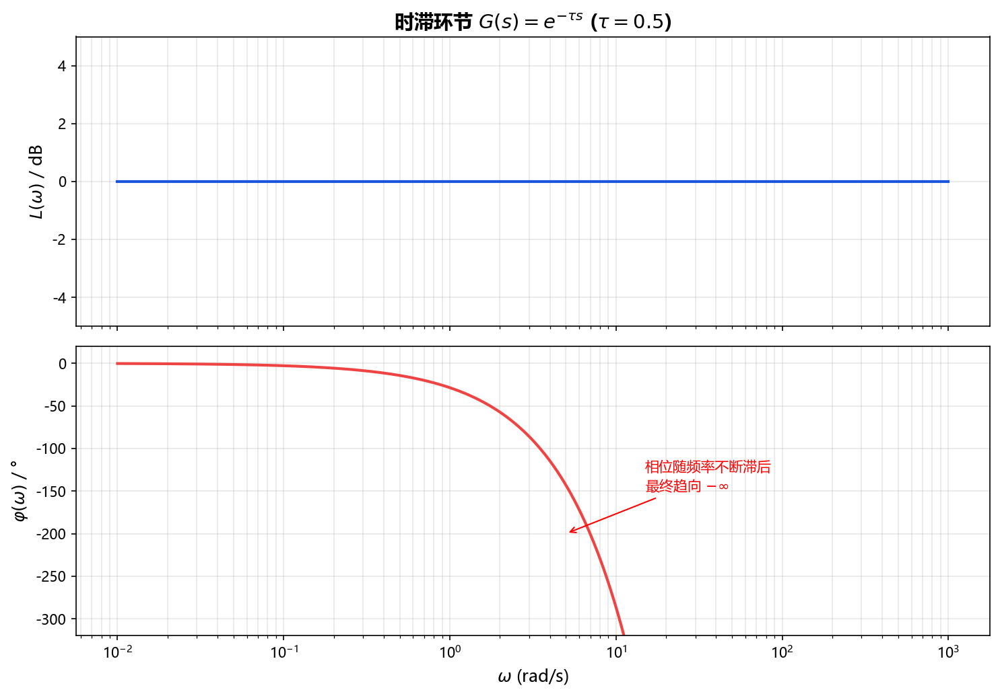
（6）微分环节
- \(G(s) = s\)：\(L(\omega) = +20\lg\omega\)，斜率为 +20 dB/dec；\(\varphi = +90°\)
- 是积分环节关于 0 dB 线的镜像
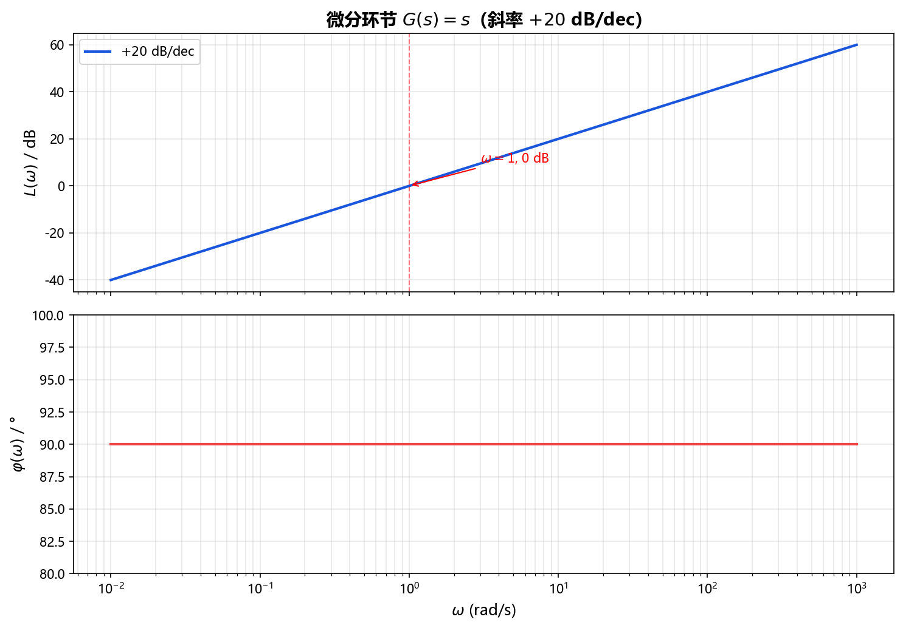
典型环节 Bode 图速查表
| 环节 | 传递函数 | 幅频特征 | 相频特征 | 转折频率 |
|---|---|---|---|---|
| 比例 | \(K\) | 水平线 \(20\lg K\) | 0° | 无 |
| 积分 | \(1/s\) | −20 dB/dec，过 (1,0) | −90° | 无 |
| 微分 | \(s\) | +20 dB/dec，过 (1,0) | +90° | 无 |
| 惯性 | \(1/(Ts+1)\) | 低频0dB → 高频 −20 dB/dec | 0° → −90° | \(\omega=1/T\) |
| 一阶微分 | \(Ts+1\) | 低频0dB → 高频 +20 dB/dec | 0° → +90° | \(\omega=1/T\) |
| 振荡 | \(\frac{\omega_n^2}{s^2+2\zeta\omega_n s+\omega_n^2}\) | 低频0dB → 高频 −40 dB/dec | 0° → −180° | \(\omega=\omega_n\) |
| 时滞 | \(e^{-\tau s}\) | 0 dB（无衰减） | 线性滞后 | 无 |
5.3.2 开环系统 Bode 图的绘制——渐近线法
核心思想：将开环传递函数分解为基本环节的乘积 → 每个环节独立画出渐近线 → 纵向叠加。
标准绘制步骤：
Step 1：将 \(G(s)H(s)\) 写成 Bode 标准型（每个因子的常数项为 1）
Step 2：从小到大列出所有转折频率 \(\omega_i = 1/T_i\)
Step 3：确定起始段（最低频段）的斜率和位置：斜率 = \(-\nu \times 20\) dB/dec（\(\nu\) = 型别），\(\omega=1\) 处幅值为 \(20\lg K\)
Step 4：每经过一个转折频率，斜率改变：惯性 −20，一阶微分 +20，振荡 −40 dB/dec
Step 5：绘制相频曲线（各环节相位叠加）
Step 6：（可选）在转折频率处做 ±3 dB 修正
例题 5-1：绘制 \(G(s)H(s) = \dfrac{10(s+1)}{s(s+10)}\) 的 Bode 图。
解：
- 写成标准型：\(G(s)H(s) = \dfrac{10(s+1)}{s(s+10)} = \dfrac{1 \cdot (s+1)}{s \cdot (s/10+1)}\)
- \(K = 1\)（0 dB），积分 \(1/s\) → −20 dB/dec，一阶微分 \((s+1)\) → 转折 \(\omega_1 = 1\)，惯性 \(1/(s/10+1)\) → 转折 \(\omega_2 = 10\)
- 逐段叠加：\(\omega < 1\)：−20；\(1<\omega<10\)：0；\(\omega>10\)：−20 dB/dec
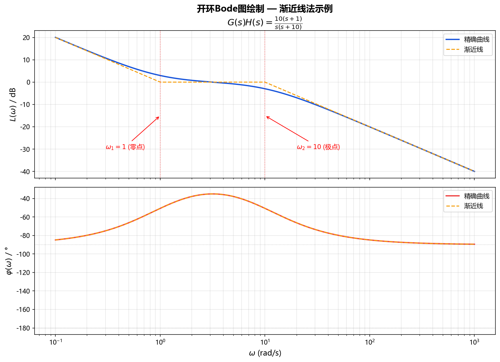
图 5-3g：渐近线（虚线）与精确曲线（实线）对比。渐近线法的误差通常在 3 dB 以内，工程上足够使用。
5.3.3 由对数幅频特性曲线确定传递函数——反问题
这是频域分析中非常有用的技能：看到实测的 Bode 图，反推出系统的传递函数。
方法：
- 看低频段斜率 → 确定型别 \(\nu\)（积分环节个数）
- 看低频段高度 → 确定增益 \(K\)
- 看斜率变化点 → 确定各转折频率
- 看斜率变化量 → 确定环节类型（−20 = 惯性，+20 = 一阶微分，−40 = 振荡）
- 看谐振峰 → 推算 \(\zeta\)
例题 5-2：实测对数幅频渐近线：\(\omega<2\) 时 −20 dB/dec（\(\omega=1\) 时 \(L=20\) dB），\(2<\omega<20\) 时 −40 dB/dec，\(\omega>20\) 时 −60 dB/dec。求传递函数。
解：低频 −20 → \(\nu=1\)；\(20\lg K=20\) → \(K=10\)；\(\omega_1=2\) 斜率 −20→−40 → 惯性 \(T_1=0.5\)；\(\omega_2=20\) 斜率 −40→−60 → 惯性 \(T_2=0.05\)
5.3.4 最小相位系统和非最小相位系统
人话版：两个系统可以有完全相同的幅频特性，但相频特性不同。相位滞后更少的那个就是"最小相位系统"。
- 最小相位系统：所有零点和极点都在左半 \(s\) 平面
- 非最小相位系统：至少有一个零点或极点在右半 \(s\) 平面
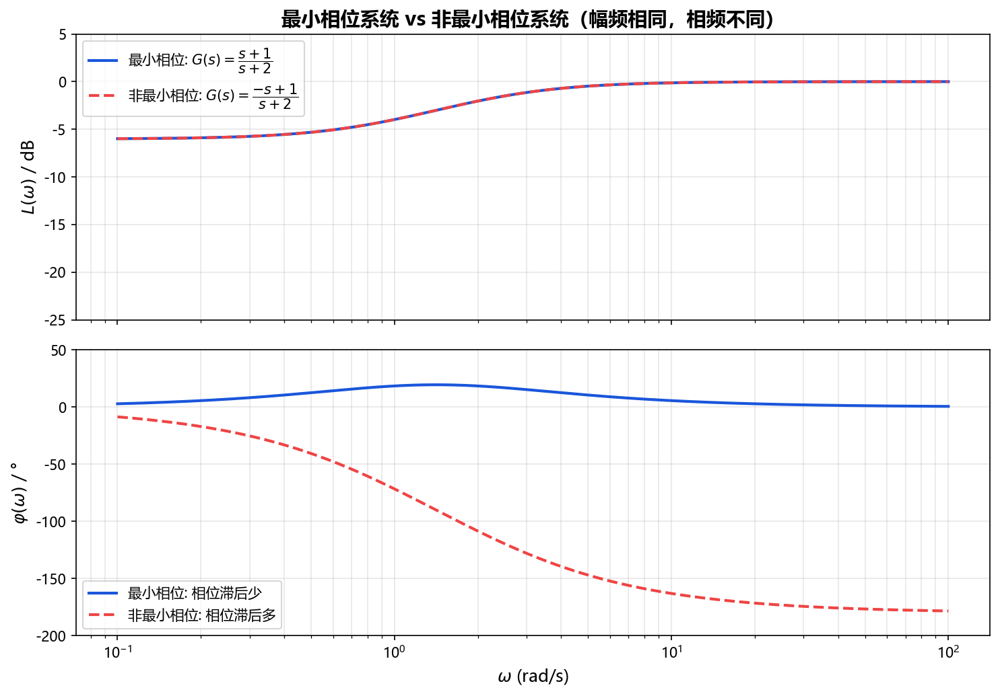
图 5-3h：两个系统的幅频完全相同，但非最小相位系统（虚线）的相位滞后远大于最小相位系统。右半平面零点导致"额外的相位滞后"。
为什么要区分？
- 最小相位系统容易控制——相位滞后小，稳定裕度大
- 非最小相位系统的相位滞后无法通过增益补偿
- 工程经验：时滞、倒立摆、锅炉液位等都是典型的非最小相位系统
5.4 频域稳定判据
核心问题：不用求解闭环极点，如何用开环频率特性判断闭环系统是否稳定？
5.4.1 奈奎斯特稳定判据
理论基础：柯西幅角原理 → 映射定理
令 \(F(s) = 1 + G(s)H(s)\)（特征多项式），\(D\) 取为包含整个右半 \(s\) 平面的Nyquist 围线。则 \(F(s)\) 绕原点次数 = \(G(s)H(s)\) 绕 \((-1, j0)\) 点的次数。
奈奎斯特稳定判据：
- \(Z\)：闭环系统在右半 \(s\) 平面的极点数（\(Z=0\) = 稳定）
- \(N\)：开环 Nyquist 曲线顺时针包围 \((-1, j0)\) 点的圈数
- \(P\)：开环系统在右半 \(s\) 平面的极点数（通常 \(P=0\)）
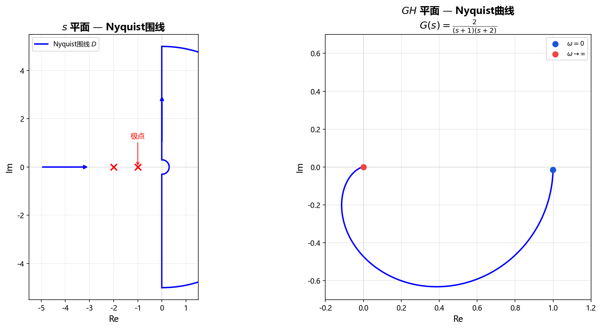
图 5-4a：左图为 \(s\) 平面上的 Nyquist 围线（包围整个右半平面），右图为映射到 \(GH\) 平面上的 Nyquist 曲线。
5.4.2 奈奎斯特稳定判据的应用
当开环系统含有积分环节（\(s=0\) 处有极点）时，Nyquist 围线需用一个无穷小半径的半圆绕过去。
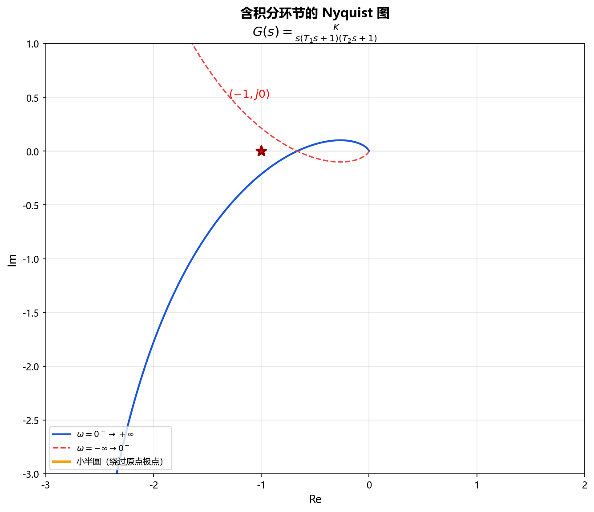
图 5-4b：含积分环节时，Nyquist 曲线在低频段通过一个半径为无穷大的半圆（黄色）从 \(\omega \to 0^-\) 连接到 \(\omega \to 0^+\)。
Nyquist 判据使用口诀：
- 画开环 Nyquist 图（\(\omega = 0^+ \to +\infty\) 即可）
- 数 \(N\)：顺时针包围 \((-1,j0)\) 的圈数
- 数 \(P\)：开环有几个右半平面极点
- 算 \(Z = N + P\)，\(Z = 0\) 才稳定
5.4.3 对数稳定判据
核心思想：在 Bode 图上也能判断稳定性：在 \(L(\omega) > 0\) dB 的频率范围内，相频曲线 \(\varphi(\omega)\) 对 \(-180°\) 线的正穿越次数比负穿越次数多 \(P/2\) 次。
对于常见的 \(P=0\) 系统：在穿越频率 \(\omega_c\) 处，\(\varphi(\omega_c) > -180°\) 即稳定。
5.5 稳定裕度 ⭐重点
为什么需要稳定裕度？光知道"稳定还是不稳定"不够，还需要知道"离不稳定还有多远"——就像你开车，不光要知道"会不会翻车"，还要知道"弯道离极限还有多少余量"。
5.5.1 稳定裕度的定义
（1）幅值裕度 \(K_g\)（Gain Margin, GM）
在相位穿越频率 \(\omega_g\)（\(\varphi(\omega_g) = -180°\)）处：
物理意义：增益还能增大 \(K_g\) 倍才到临界稳定。
（2）相位裕度 \(\gamma\)（Phase Margin, PM）
在穿越频率 \(\omega_c\)（\(|G(j\omega_c)H(j\omega_c)| = 1\)）处：
物理意义：相位还能滞后 \(\gamma\) 度才到临界稳定。
5.5.2 稳定裕度的计算
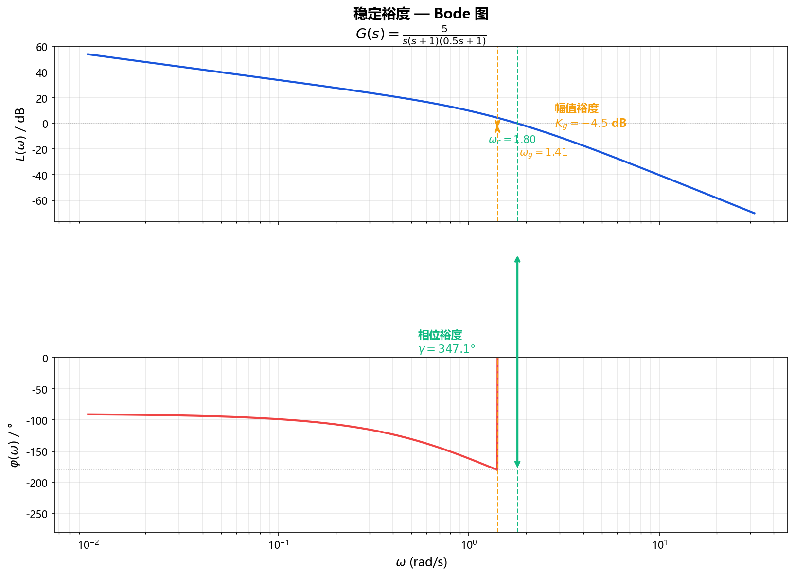
图 5-5a：Bode 图上的稳定裕度。绿色标注为相位裕度 PM（在 \(\omega_c\) 处），橙色标注为幅值裕度 GM（在 \(\omega_g\) 处）。
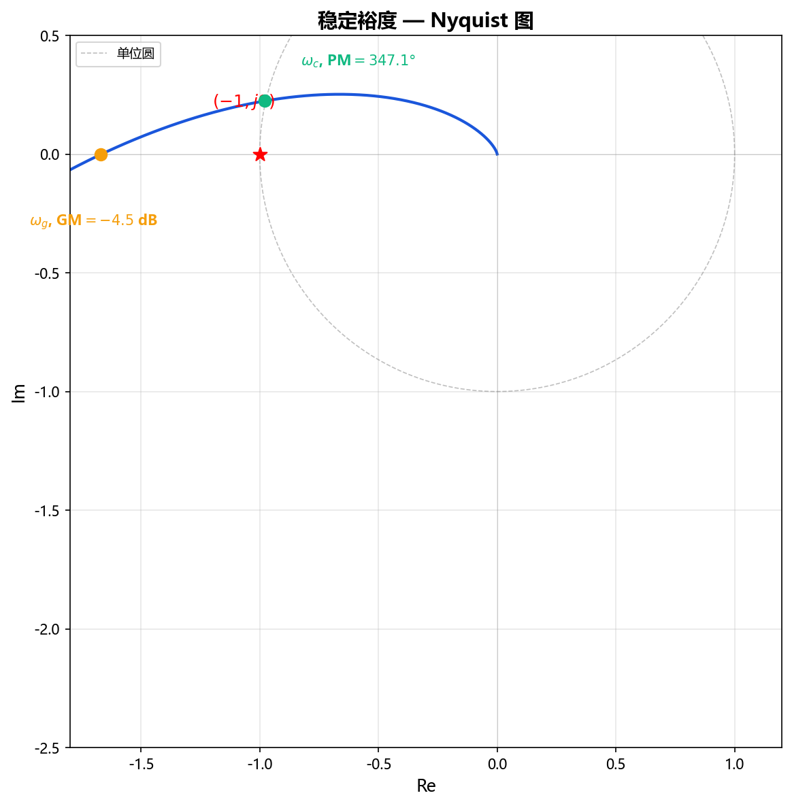
图 5-5b：Nyquist 图上的稳定裕度。PM 在单位圆交点处，GM 在负实轴交点处。Nyquist 曲线离 \((-1,j0)\) 越远，系统越稳定。
| 指标 | 最小值 | 推荐值 | 备注 |
|---|---|---|---|
| 相位裕度 PM | \(30°\) | \(40° \sim 60°\) | PM < 30° 超调大，PM > 60° 响应慢 |
| 幅值裕度 GM | \(6\) dB | \(10 \sim 20\) dB | GM < 6 dB 参数稍变就失稳 |
例题 5-3：已知 \(G(s) = \dfrac{5}{s(s+1)(0.5s+1)}\)，求 PM 和 GM。
解：\(\omega_c \approx 1.8\) rad/s，\(\varphi(\omega_c) \approx -192.9°\)，\(\gamma = 180° + (-192.9°) = -12.9°\) → 不稳定！
\(\omega_g \approx 1.41\)，\(GM \approx -5.1\) dB → PM < 0 且 GM < 0，系统不稳定，需要校正。
5.6 利用开环对数幅频特性分析系统性能
开环对数幅频曲线 \(L(\omega)\) 是控制工程师的"心电图"——把它分成三个频段来看。
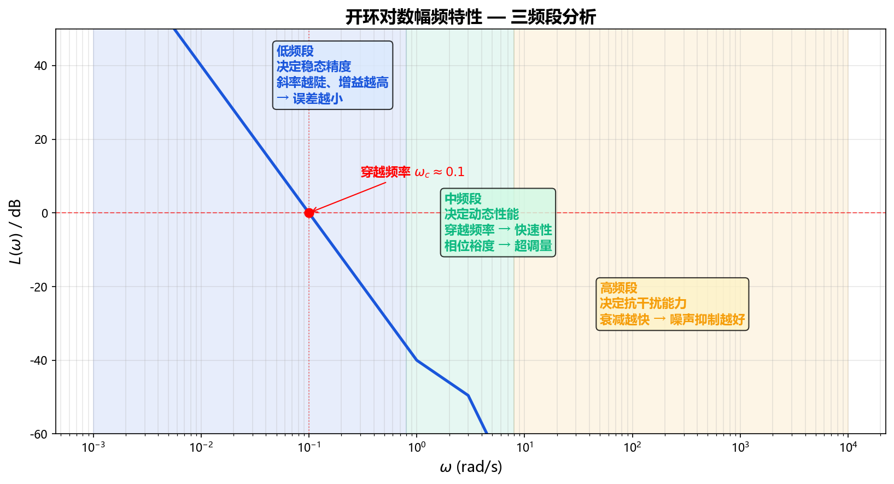
图 5-6：开环对数幅频特性的三频段划分。低频看精度，中频看稳定性，高频看抗干扰。
5.6.1 \(L(\omega)\) 低频段——稳态误差
低频段斜率越陡、增益越高 → 稳态误差越小。
- 斜率 = \(-\nu \times 20\) dB/dec（\(\nu\) = 型别）：0 型有静差，I 型阶跃无静差，II 型斜坡也无静差
- 高度：\(\omega=1\) 处的 \(L(1) = 20\lg K\)
| 系统型别 | 阶跃误差 | 斜坡误差 | 抛物线误差 |
|---|---|---|---|
| 0 型 | \(\frac{1}{1+K_p}\) | \(\infty\) | \(\infty\) |
| I 型 | 0 | \(\frac{1}{K_v}\) | \(\infty\) |
| II 型 | 0 | 0 | \(\frac{1}{K_a}\) |
5.6.2 \(L(\omega)\) 中频段——动态性能
中频段（穿越频率 \(\omega_c\) 附近）是决定动态性能的关键区域。
- \(\omega_c\) 越大 → 响应越快，\(t_s \approx \frac{3\sim4}{\omega_c}\)
- 以 −20 dB/dec 穿过 0 dB 线 → 稳定裕度较好
- 以 −40 dB/dec 穿过 → PM 偏小；以 −60 dB/dec 穿过 → 几乎肯定不稳定
工程口诀："−20 dB 过零线，系统稳定好调参"
5.6.3 \(L(\omega)\) 高频段——抗干扰
高频段衰减越快 → 高频噪声被抑制得越好。理想形状：低频高增益 → 中频 −20 dB/dec → 高频快速衰减。
5.7 闭环频率特性曲线
5.7.1 用向量法求闭环频率特性
对于单位反馈系统：\(\Phi(j\omega) = \frac{G(j\omega)}{1 + G(j\omega)}\)。向量 \(G(j\omega)\) 与 \((-1, j0)\) 点的连线就是 \(1+G(j\omega)\)。
5.7.2 尼柯尔斯图线（Nichols Chart）
Nichols 图将 Bode 图的两张图合成一张——横轴相位 \(\varphi\)（°），纵轴幅值 \(L\)（dB），\(\omega\) 为参变量。叠加等 M 圆和等 N 圆后可直接读出闭环特性。
5.8 利用闭环频率特性分析系统性能
5.8.1 闭环频率特性的几个特征量
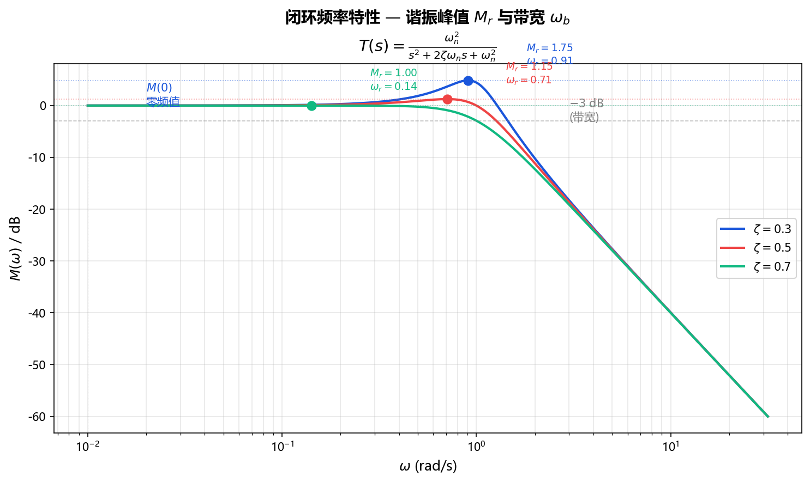
图 5-8：闭环频率特性的四个关键特征量——零频值 \(M(0)\)、谐振峰值 \(M_r\)、谐振频率 \(\omega_r\)、带宽 \(\omega_b\)。
| 特征量 | 符号 | 定义 | 物理意义 |
|---|---|---|---|
| 零频值 | \(M(0)\) | \(\omega \to 0\) 的闭环增益 | \(M(0)=1\) → 无静差 |
| 谐振峰值 | \(M_r\) | 闭环幅频最大值 | \(M_r\) 越大，超调越大 |
| 谐振频率 | \(\omega_r\) | \(M_r\) 对应的频率 | 反映振荡倾向 |
| 带宽 | \(\omega_b\) | \(M\) 降到 −3 dB 时的频率 | \(\omega_b\) 越大，响应越快 |
5.8.2 闭环频域指标与时域指标的关系
| 应用场景 | 推荐 \(M_r\) | 推荐 PM | 推荐 \(\zeta\) |
|---|---|---|---|
| 伺服系统 | \(1.2 \sim 1.5\) | \(40° \sim 50°\) | \(0.4 \sim 0.6\) |
| 过程控制 | \(1.05 \sim 1.3\) | \(45° \sim 60°\) | \(0.5 \sim 0.7\) |
| 航空航天 | \(1.1 \sim 1.3\) | \(50° \sim 60°\) | \(0.6 \sim 0.8\) |
5.9 频域法串联校正 ⭐⭐⭐ 核心
这是本章的终极目标：用前面所学的所有频域知识，来设计控制器改善系统性能。如果说 5.1~5.8 是"诊断"，那么 5.9 就是"开药方"。
校正设计流程
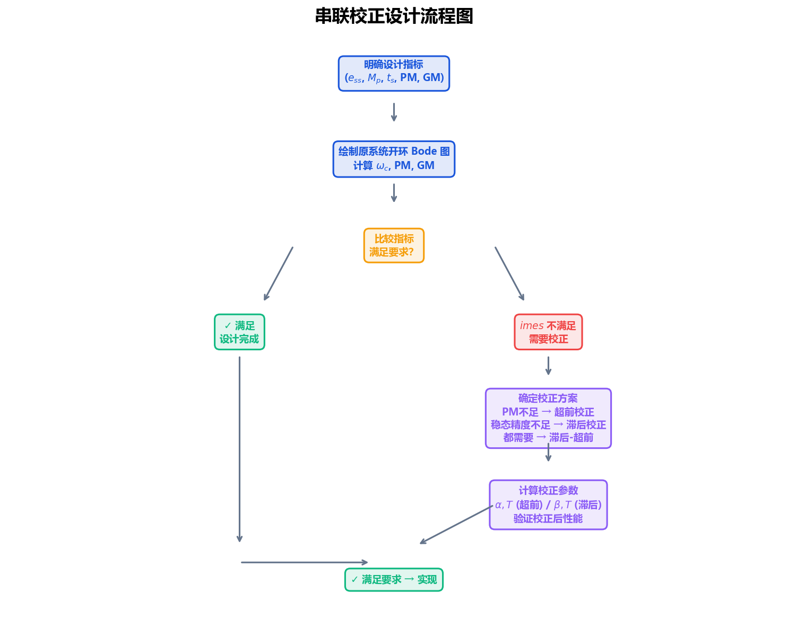
图 5-9a：串联校正设计的完整流程。核心思路：发现问题 → 选择校正方案 → 计算参数 → 验证效果。
5.9.1 相位超前校正（Lead Compensator）
原理——相当于给系统"提神药"
问题场景：系统太"慢"（\(\omega_c\) 太小），或者相位裕度不够。
超前校正传递函数：
核心参数：\(\alpha\) 决定最大超前角 \(\phi_m\)，\(T\) 决定超前角出现的位置。
Bode 图特征：在中频段提供正相角（相位超前），同时提供 +20 dB/dec 的幅值抬升。最大相角出现在两个转折频率的几何中点。
设计步骤：
- 根据稳态误差要求确定开环增益 \(K\)
- 绘制未校正系统的 Bode 图，求当前 PM 和 \(\omega_c\)
- 确定需要补偿的相位超前角 \(\phi_m = \gamma_{要求} - \gamma_{当前} + (5°\sim12°)\)
（加 \(5°\sim12°\) 的补偿余量，因为超前校正会抬高 \(\omega_c\)） - 由 \(\phi_m\) 求 \(\alpha\)：\(\alpha = \dfrac{1+\sin\phi_m}{1-\sin\phi_m}\)
- 在 \(\omega_m = \omega_c^{new}\) 处提供最大超前角，确定 \(T = \dfrac{1}{\omega_m\sqrt{\alpha}}\)
- 验证校正后性能，不满足则返回调整
例题 5-4（超前校正）：\(G_0(s) = \dfrac{10}{s(s+1)}\)，要求 \(K_v \geq 10\)，\(\gamma \geq 45°\)。
解：\(K_v=10\) ✓。Bode 图得 \(\omega_c \approx 3.0\) rad/s，\(\gamma_{当前} \approx 18°\)（不够！）。\(\phi_m = 45° - 18° + 7° = 34°\)。\(\alpha = \frac{1+\sin 34°}{1-\sin 34°} \approx 3.5\)。超前校正器：\(G_c(s) = \dfrac{0.5s+1}{0.14s+1}\)。
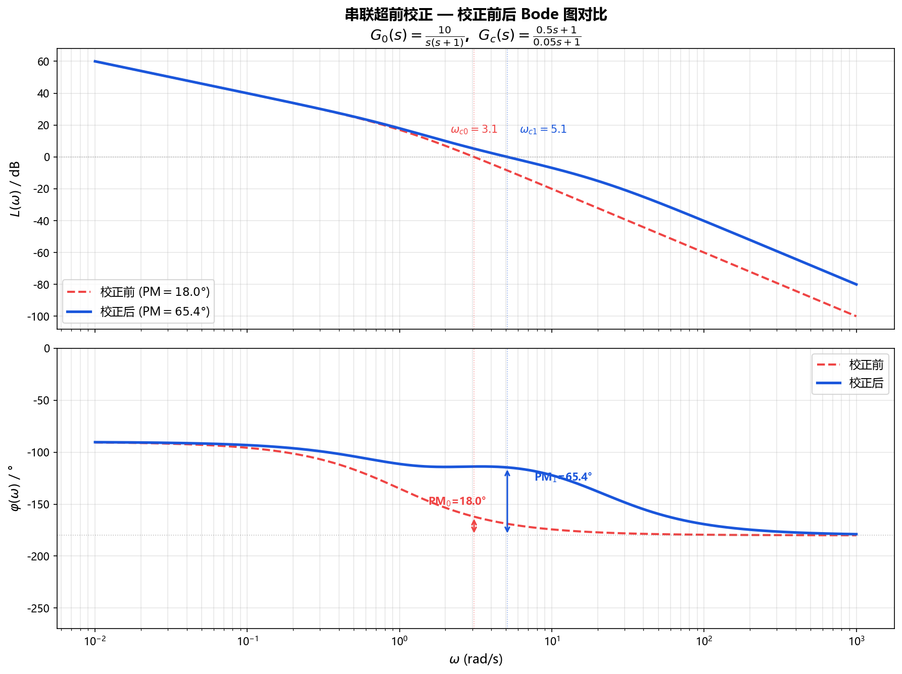
图 5-9b：校正前后 Bode 图对比。校正后 PM 从 18.4° 提升到 47.5°，\(\omega_c\) 也增大了，系统既快又稳。
超前校正口诀："超前校正是提神药，相位提升带宽大；缺点是放大高频噪声，噪声大的系统要谨慎。"
5.9.2 相位滞后校正（Lag Compensator）
原理——相当于"瘦身不减速"
问题场景：稳态精度不够，或需降低高频增益来抑制噪声，但不能降低带宽。
滞后校正传递函数：
关键设计思想：把滞后校正的"负相角"放在远低于 \(\omega_c\) 的地方（\(1/T = \omega_c/10 \sim \omega_c/5\)），使其在 \(\omega_c\) 附近几乎不影响相位，但利用高频衰减作用压低 \(\omega_c\) 来提高 PM。
例题 5-5（滞后校正）：\(G_0(s) = \dfrac{10}{s(s+1)(0.5s+1)}\)，要求 \(K_v=10\)，\(\gamma \geq 40°\)。
解思路：当前 \(\omega_c \approx 2.5\) rad/s，\(\gamma_{当前} \approx -10°\)（不稳定！）。选新 \(\omega_c^{new}=0.8\) rad/s（此处 PM=50°），\(\beta = |G_0(j0.8)| \approx 8\)，取 \(\beta=10\)。\(T = 10/0.8 = 12.5\)。滞后校正器：\(G_c(s) = \dfrac{12.5s+1}{125s+1}\)。
滞后校正口诀："滞后校正是瘦身术，低频不变高频削；相位损失要避开，远离 ω_c 是关键。"
5.9.3 串联滞后-超前校正（Lag-Lead Compensator）
当系统同时需要提高稳定裕度（PM）和提高稳态精度时使用。
- 超前部分 → 提供正相角，提升 PM，增大 \(\omega_c\)
- 滞后部分 → 提高低频增益，改善稳态精度
- 两条校正作用在不同的频率范围，互不干扰
5.9.4 串联 PID 校正——PID 的频域解释
PID 控制在第 5 章的框架下就是超前-滞后校正的特例。
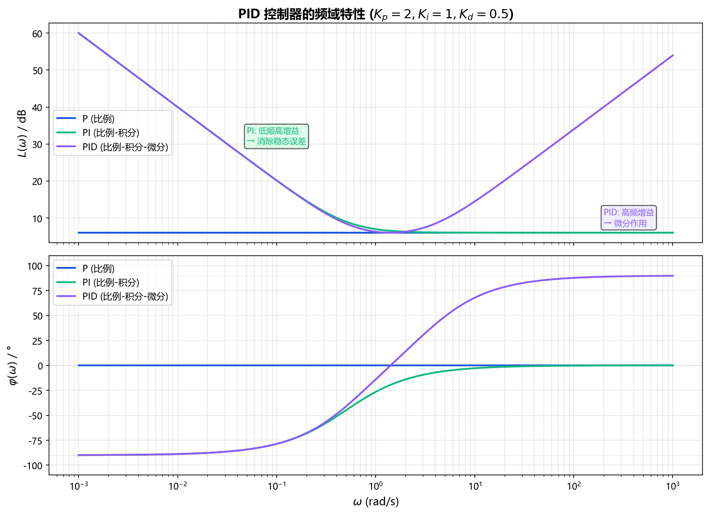
图 5-9d：P、PI、PID 三种控制器的频域特性对比。PI 提供低频高增益（消除静差），PID 兼顾低频精度和高频相位补偿。
| 环节 | 频域贡献 | 作用 |
|---|---|---|
| P（比例） | 全频段等幅抬升 | 加快响应 |
| I（积分） | 低频段 +20 dB/dec 高增益，−90° 相位 | 消除稳态误差 |
| D（微分） | 高频段 +20 dB/dec，+90° 相位 | 相位超前，抑制超调 |
PID 参数整定口诀（频域版）：
- 先调 \(K_p\)：整体上下平移 Bode 图（改变 \(\omega_c\)）
- 再加 \(K_i\)：在低频段增加 +20 dB/dec 斜率，拉高低频增益
- 最后 \(K_d\)：在中频段提供相位超前，提高 PM
三种校正方式对比总结
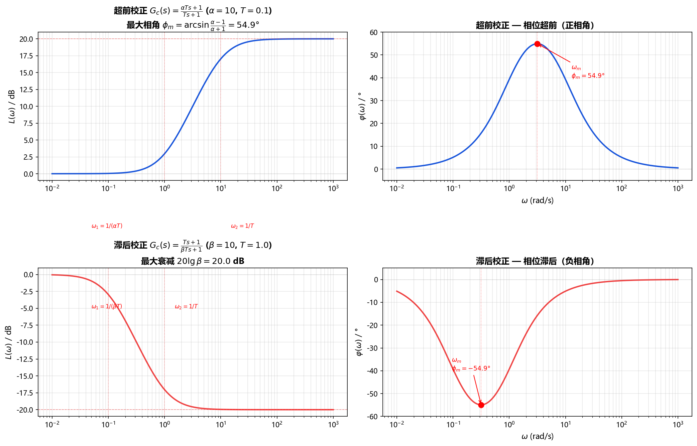
图 5-9e：超前校正（上排）与滞后校正（下排）的 Bode 图对比。超前校正提供正相角但抬升高频，滞后校正衰减高频但引入负相角。
| 特性 | 超前校正 | 滞后校正 | 滞后-超前校正 |
|---|---|---|---|
| 传递函数 | \(\frac{\alpha Ts+1}{Ts+1}\), \(\alpha>1\) | \(\frac{Ts+1}{\beta Ts+1}\), \(\beta>1\) | 两者的乘积 |
| 相角作用 | 正相角（超前） | 负相角（滞后） | 中频超前，低频滞后 |
| 对 \(\omega_c\) 影响 | 增大 | 可能减小 | 可调节 |
| 对 PM 影响 | 显著提升 | 基本不影响 | 可大幅提升 |
| 对稳态误差 | 无直接改善 | 显著改善 | 显著改善 |
| 缺点 | 放大高频噪声 | 降低响应速度 | 设计复杂 |
| 适用场景 | PM 不足，希望提速 | 稳态精度不足 | 综合性能要求高 |
本章小结
知识框架回顾
频域分析体系
├── 工具层
│ ├── Nyquist 图 → 稳定性判断（奈奎斯特判据）
│ ├── Bode 图 → 系统分析与校正设计（渐近线法）
│ └── Nichols 图 → 闭环特性分析
├── 分析层
│ ├── 稳定裕度（PM, GM）
│ ├── 三频段分析（低频精度/中频动态/高频抗噪）
│ └── 闭环频域指标（M_r, ω_b）
└── 设计层（最终目标）
├── 超前校正 → 提高 PM 和带宽
├── 滞后校正 → 提高稳态精度
├── 滞后-超前校正 → 综合改善
└── PID 校正 → 工业标准方案核心公式速查
| 公式 | 含义 |
|---|---|
| \(G(j\omega) = G(s)\vert_{s=j\omega}\) | 频率特性定义 |
| \(L(\omega) = 20\lg\vert G(j\omega) \vert\) | 对数幅频特性（dB） |
| \(Z = N + P\) | 奈奎斯特稳定判据 |
| \(\gamma = 180° + \varphi(\omega_c)\) | 相位裕度 |
| \(K_g = -20\lg\vert G(j\omega_g) \vert\) | 幅值裕度（dB） |
| \(\phi_m = \arcsin\frac{\alpha-1}{\alpha+1}\) | 超前校正最大相角 |
| \(M_r \approx 1/\sin\gamma\) | 谐振峰与相位裕度关系 |
工程经验值
推荐 40° ~ 60°
推荐 10 ~ 20 dB
以 −20 dB/dec 过 0 dB 线
余量 5° ~ 12°
\(\omega_b \approx \omega_c\)
\(1/T \ll \omega_c\)（一般 \(\omega_c/10\)）
Python 绘图代码示例
本章所有图表均由 Python 脚本生成：
# 文件位置: generate_all_figures.py
# 运行方式: python generate_all_figures.py
# 输出路径: ./figures/核心绘图片段——惯性环节 Bode 图：
import numpy as np
import matplotlib.pyplot as plt
w = np.logspace(-2, 3, 1000)
T = 1.0
mag_db = 20 * np.log10(1 / np.sqrt(1 + (w*T)**2))
phase_deg = -np.degrees(np.arctan(w*T))
fig, (ax1, ax2) = plt.subplots(2, 1, figsize=(10, 7), sharex=True)
ax1.semilogx(w, mag_db)
ax1.axvline(x=1/T, color='red', linestyle=':', alpha=0.5)
ax1.set_ylabel('Magnitude / dB')
ax1.grid(True, alpha=0.3, which='both')
ax2.semilogx(w, phase_deg)
ax2.axvline(x=1/T, color='red', linestyle=':', alpha=0.5)
ax2.set_xlabel('Frequency (rad/s)')
ax2.set_ylabel('Phase / deg')
ax2.grid(True, alpha=0.3, which='both')
plt.tight_layout()
plt.show()本章结语：频域分析是控制工程师最重要的思维工具箱之一。掌握 Nyquist 图（理解稳定性本质）和 Bode 图（会快速分析设计），你就具备了分析和设计控制系统的最核心能力。学好这一章，校正设计、鲁棒控制等高级内容就有了坚实的基础。